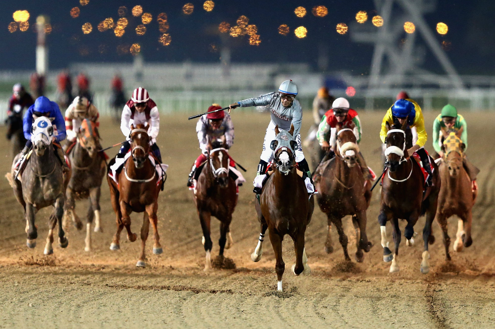

Venha conhecer as histórias mais incríveis sobre corridas de cavalos.

Um dos maiores entretenimento do Japão
Acontecimentos surreais
Japan cup
Em 1984, o azarão Katsuragi Ace fez história ao vencer a quarta edição da Japan Cup de ponta a ponta, quebrando o domínio estrangeiro inicial do torneio e provando ao mundo a competitividade do turfe japonês.
O incidente de 12 bilhões de ienes
No Takarazuka Kinen de 2015, o imprevisível Gold Ship empinou dentro do bloco de largada no exato momento da abertura, terminando na 15ª colocação e fazendo evaporar cerca de 12 bilhões de ienes em apostas em questão de segundos.
Tríplice Coroa
Vencer a Tríplice Coroa é a honra máxima e o teste definitivo do turfe japonês, um feito lendário reservado apenas aos oito campeões imortalizados por sua perfeição: St. Lite, Shinzan, Mr. C.B., Symboli Rudolf, Narita Brian, Deep Impact, Orfevre e Contrail.Banco de dados dos cavalos